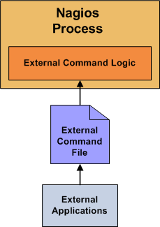

Up To: Contents
Up To: Contents
 See Also: Passive Checks, Adaptive Monitoring
See Also: Passive Checks, Adaptive Monitoring
Introduction
Nagios can process commands from external applications (including the CGIs) and alter various aspects of its monitoring functions based on the commands it receives. External applications can submit commands by writing to the command file, which is periodically processed by the Nagios daemon.
Enabling External Commands
In order to have Nagios process external commands, make sure you do the following:
When Does Nagios Check For External Commands?
Using External Commands
External commands can be used to accomplish a variety of things while Nagios is running. Example of what can be done include temporarily disabling notifications for services and hosts, temporarily disabling service checks, forcing immediate service checks, adding comments to hosts and services, etc.
Command Format
External commands that are written to the command file have the following format...
[time] command_id;command_arguments
...where time is the time (in time_t format) that the external application submitted the external command to the command file. The values for the command_id and command_arguments arguments will depend on what command is being submitted to Nagios.
A full listing of external commands that can be used (along with examples of how to use them) can be found online at the following URL:
http://www.nagios.org/developerinfo/externalcommands/